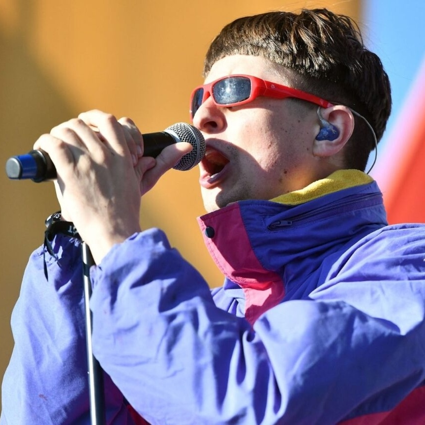
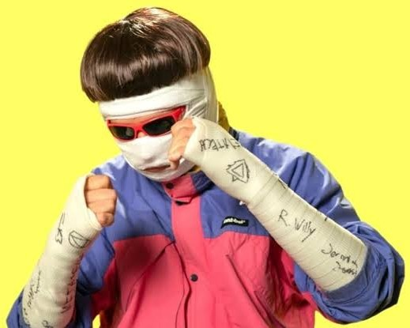
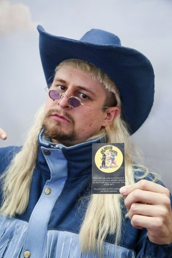
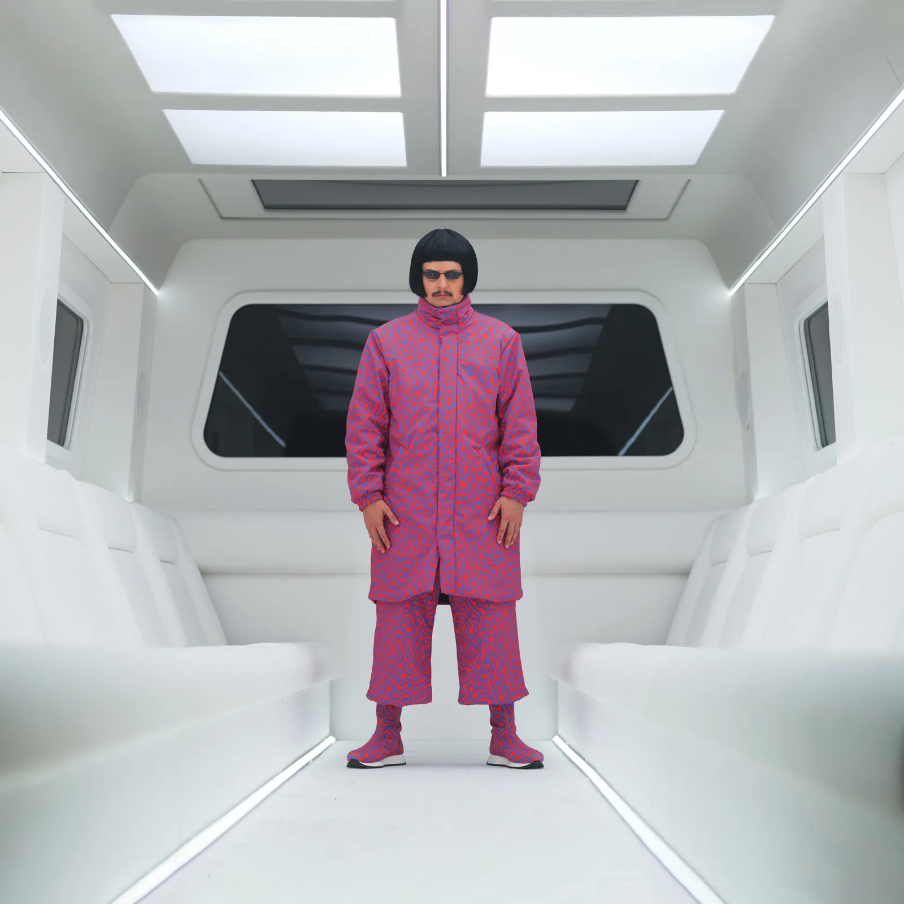
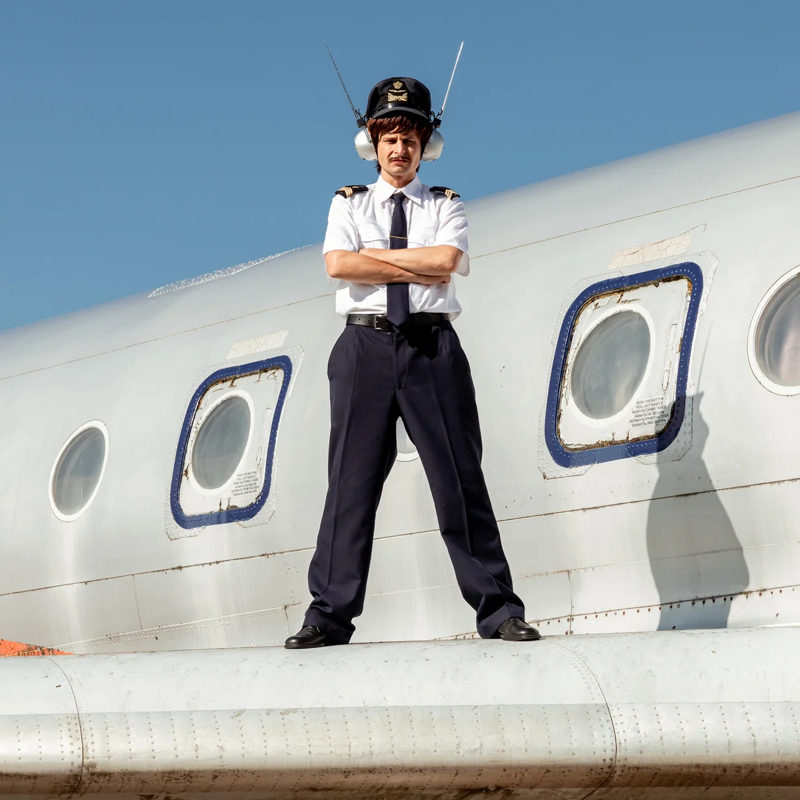

Tree lançou sua carreira solo como "Tree" em 2010. Nessa época, ele já havia feito apresentações para artistas como Skrillex e Zeds Dead. Inicialmente, ele lançou sua música de forma independente, com o álbum Splitting Branches lançado no início de 2013. Ele cantava e tocava guitarra em uma banda de ska chamada Irony, que foi sua primeira experiência como músico. Ele produziu dubstep por um breve período e também se apresentou em festivais de música como o Wobbleland 2011 em São Francisco. A partir daí, ele lançou principalmente músicas sob o pseudônimo "Tree".
Em agosto de 2013, Tree assinou com a R&S Records, sediada em Londres, e lançou seu primeiro EP , Demons. O EP ganhou algum reconhecimento depois que o vocalista do Radiohead, Yorke, aprovou seu cover da música "Karma Police". Tree acabou entrando em hiato enquanto voltava a estudar, cursando tecnologia musical no Instituto de Artes da Califórnia.
Em março de 2016, Tree retornou à música, participando da música "Forget It" de Getter, parte de seu EP, Radical Dude! Em novembro daquele ano, ele fez sua estreia na televisão, se apresentando no Last Call with Carson Daly.
Pouco depois do lançamento de "When I'm Down" de Whethan com participação de Tree em outubro de 2016, Tree assinou com a Atlantic Records . No mesmo ano, ele se formou no Instituto de Artes da Califórnia com um bacharelado em belas artes. Em 26 de maio de 2017, ele lançou "Welcome to LA" como seu single de estreia como Oliver Tree. Em fevereiro de 2018, Tree lançou seu EP de estreia por uma grande gravadora, Alien Boy, juntamente com o videoclipe duplo de "All That x Alien Boy". Tree escreveu e dirigiu a estreia, que levou mais de nove meses para ser criada. Ele passou cinco meses praticando saltos freestyle com monster truck no Perris Auto Speedway e realizou todas as suas acrobacias no videoclipe. Tree tocou em grandes festivais, incluindo Lollapalooza e Outside Lands Music and Arts Festival, e se apresentou como convidado especial no Coachella Valley Music and Arts Festival, onde foi posteriormente nomeado na lista "The Best (and Weirdest) Fashion at Coachella" da LA Weekly em 2017.
Ele foi o ato de apoio na turnê Last to Leave de Louis the Child (2017) e na turnê Are You OK? de Skizzy Mars (2018), e estava programado para se juntar a Lil Dicky e DJ Mustard na turnê Life Lessons no outono de 2018 antes de ser cancelada. Tree fez turnê pela América do Norte e Europa com Hobo Johnson em 2018. Tree também escreveu, atuou e dirigiu esquetes em vídeos de comédia e trabalhou com empresas como a Jerry Media.

Seu quarto videoclipe e single, "Miracle Man", foi lançado em 7 de junho de 2019, com o vídeo alcançando 1,3 milhão de visualizações em seu primeiro dia de lançamento, e Tree também anunciou sua turnê de despedida, intitulada Goodbye Farewell Tour, que ocorreu de setembro a novembro de 2019. Tree lançou seu segundo EP, Do You Feel Me?, em 2 de agosto de 2019, que inclui a música "Introspective". O EP recebeu críticas geralmente positivas.
Em 6 de dezembro de 2019, Tree lançou "Cash Machine", um single acompanhado de um videoclipe. Juntamente com o single, Tree anunciou seu álbum de estreia, Ugly Is Beautiful, e que o álbum seria lançado em 27 de março de 2020. Em 25 de março de 2020, Tree tuitou em seu Twitter que, devido à pandemia de COVID-19 , Ugly Is Beautiful não seria lançado na data prevista. No entanto, em 19 de maio, a data oficial de lançamento do álbum foi revelada: 12 de junho. Em 8 de junho de 2020, Tree anunciou sua decisão de adiar Ugly Is Beautiful pela segunda vez, desta vez para 17 de julho. Ele afirmou que, devido aos problemas de racismo e violência policial contra pessoas negras que ocorriam naquele momento após o assassinato de George Floyd, ele "não acreditava que fosse um momento apropriado" para lançar o álbum, quando "coisas muito maiores" mereciam atenção. Em 17 de julho de 2020, Ugly Is Beautiful foi lançado.

Apesar de afirmar que estava aposentado, ele lançou o single "Out of Ordinary" em 4 de fevereiro de 2021, anunciando a edição deluxe de Ugly Is Beautiful. Em 28 de maio de 2021, Tree lançou uma versão deluxe de seu álbum de estreia intitulado Ugly Is Beautiful: Shorter, Thicker & Uglier , do qual a música "Life Goes On" ganhou notável popularidade.

Em 12 de janeiro de 2022, Tree lançou o single "Cowboys Don't Cry" e, em 4 de fevereiro, o single "Freaks & Geeks", ambos de seu segundo álbum de estúdio, Cowboy Tears. Cowboy Tears foi lançado em 18 de fevereiro de 2022. Em 20 de maio de 2022, Tree lançou o single "I Hate You", seguido por outro single, "Placeholder", em 15 de julho. Ele também anunciou uma turnê para acompanhar o álbum Cowboy Tears.

Em 3 de março de 2023, Tree lançou seu primeiro single de 2023, "Here We Go Again", com o DJ e produtor musical David Guetta. Ele deu sequência a esse lançamento com um single intitulado "Bounce", lançado em 20 de junho. No mesmo dia, ele fez um show no Red Rocks Amphitheatre, perto de Morrison, Colorado, e anunciou que essa música seria o primeiro single lançado que estaria presente em seu terceiro álbum de estúdio, Alone in a Crowd. Em 17 de julho, Tree anunciou que sua turnê mundial Alone in a Crowd aconteceria de outubro de 2023 a fevereiro de 2024. Ele tinha shows agendados na Austrália com o rapper americano Sueco, na Europa e no Reino Unido com Tommy Cash e nos Estados Unidos com a banda de rock Fidlar. Em 21 de julho, ele lançou seu segundo single do álbum, "One & Only". Ele colaborou com o grupo de música eletrônica underground Super Computer em seu terceiro single, "Essence", lançado em 1º de setembro de 2023. Em 15 de setembro, foi lançado o quarto single, "Fairweather Friends". Alone in a Crowd foi lançado duas semanas depois, em 29 de setembro de 2023. Em outubro de 2025, Tree lançou o single "Superhero" como o primeiro single de seu álbum Love You Madly Hate You Badly.

Em 9 de abril de 2026, foi anunciado que Love You Madly Hate You Badly seria lançado em 24 de abril de 2026. Tree também anunciou que havia deixado a Atlantic Records para lançar o álbum de forma independente sob seu próprio selo, Alien Boy Records. O álbum foi então lançado em 24 de abril de 2026. Em 4 de maio de 2026, Tree anunciou "The World's First World Tour" (também conhecida como "Love You Madly Hate You Badly World Tour"), um empreendimento ambicioso programado para abranger sete continentes, incluindo mais de 70 shows em 30 países ao longo do restante do ano. A turnê começou em 30 de maio de 2026, na Cidade do México , com uma apresentação final, não planejada para ser a final, em São Paulo em 6 de junho.